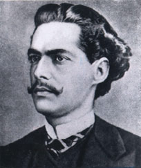
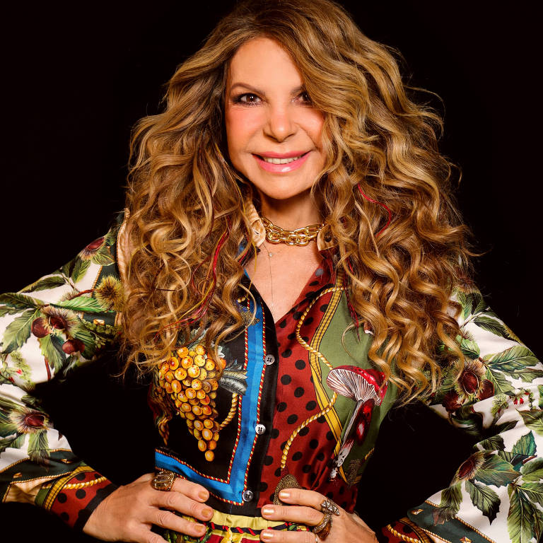

Castro Alves (1847-1871)
Foi um dos maiores poetas brasileiros do século XIX, conhecido principalmente por sua obra abolicionista. Nascido na cidade de Cachoeira, na Bahia, destacou-se por seu engajamento político, especialmente na luta pela liberdade dos escravizados. Sua carreira literária começou com a publicação de poesias e ensaios, mas foi com sua obra mais famosa, "O Navio Negreiro", que se tornou um ícone nacional. A poesia de Castro Alves é marcada pelo estilo romântico, com forte carga de crítica social e engajamento com os problemas de seu tempo. Além da produção literária, ficou conhecido por sua postura política, sendo um fervoroso defensor da abolição da escravidão e da liberdade dos negros no Brasil. Apesar de sua morte precoce aos 24 anos, deixou um legado duradouro na literatura brasileira. Sua obra continua a ser estudada e admirada, e ele é lembrado como um poeta que usou sua voz para promover justiça e igualdade.

Elba Ramalho
É uma das artistas mais renomadas da música brasileira, nascida em 1951, no estado da Paraíba. Conhecida por sua versatilidade, destacou-se na música popular brasileira e na música nordestina, com um estilo que mistura forró, frevo e MPB. Ao longo de sua carreira, lançou diversos álbuns de sucesso e ganhou inúmeros prêmios, consolidando-se como uma das grandes vozes do Brasil. Suas músicas abordam temas sobre a cultura nordestina, o amor e a vida cotidiana, sendo uma grande defensora da diversidade cultural do país. Além da carreira musical, Elba também é conhecida por sua atuação como atriz e por sua presença marcante no cenário artístico brasileiro. Seu carisma e energia no palco fazem dela uma das artistas mais queridas do país, mantendo-se relevante e vibrante ao longo dos anos.